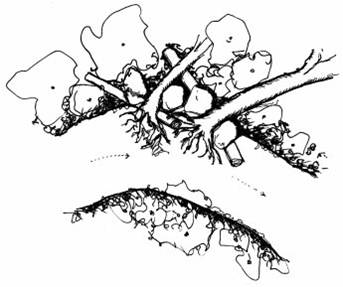
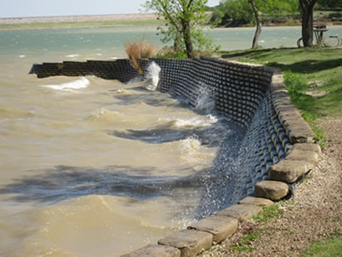

Streambank Toe Protection and Revetments
What is it?
Bank toe stabilization and revetment practices are designed to protect streambanks from erosion or potential failure. The lower part of the erosional bank is reinforced with logs, rootwads, boulders, or non-natural materials. Natural materials like logs and rootwads are preferred because they provide effective streambank erosion control, trap sediments, support vegetation regrowth, provide aquatic and terrestial habitat, are aesthetically more pleasing, and are generally more cost effective. Non-natural materials (e.g. concrete, riprap rock) should only be considered when natural materials will not be effective; please consult a technical expert .
 Natural log revetment (diagram from NRCS)
 Non-natural, bag revetment in North Texas (photo from TPWD)
Conservation Benefits
- Streambank erosion control
- Supports vegetation regrowth which will further stabilize the streambank
- Provides aquatic habitat for fish and invertebrates
- Traps excessive sediment
What does it include?
The lower portion of an eroding streambank is stabilized by burying or securing non erosive materials below and slightly above the water line (called the hard toe or revetment). Materials should effectively stabilize the streambank, protect streambank scouring and erosion, capture sediment, and promote bank revegetation. The streambank can then be gradually sloped from the hard toe/revetment to promote faster establishment of vegetation.
Natural stabilization methods
- Logs (includes Lunker structures)
- Trees
- Root wads
- Boulders
Non-natural stabilization methods
- Concrete
- Gabions
- Riprap
- Stone
Natural Toe Protection and Revetment Links
- Boulder revetments (p. 75; Center for Watershed Protection)
- Log, rootwad, and boulder revetment (NRCS)
- Longitudinal bank protection: native material bank revetment (p. 290; Cooperative Research Centre for Catchment Hydrology)
- Re-introduction techniques for instream large woody debris: bank revetments and protection (p. 313; Cooperative Research Centre for Catchment Hydrology)
- Tree revetment (p. 30; TCEQ)
- Tree revetment of tree retards (NRCS)
- Rootwad revetments (p. 728; Center for Watershed Protection)
Non-natural Toe Protection and Revetment Links
- Composite revetment (p. 30; TCEQ)
- Gabions (p. 13; TCEQ)
- Piling revetment with slotted board fence (NRCS)
- Piling revetment with wire or geotextile fencing (NRCS)
- Rock riprap (NRCS)
- Vegetated rock gabions/ gabions (NRCS)
Streambank Toe Protection Bibliography
- Henderson. 1986. Environmental designs for streambank protection projects. Journal of the American Water Resources Association 22: 549-558.
- Johnson. 2003. Low-cost methods for slowing streambank erosion. Journal of Soil and Water Conservation 58: 12-17.
- Shields et al. 2000. Warmwater stream bank protection and fish habitat: a comparative study. Environmental Management 26: 317-328.